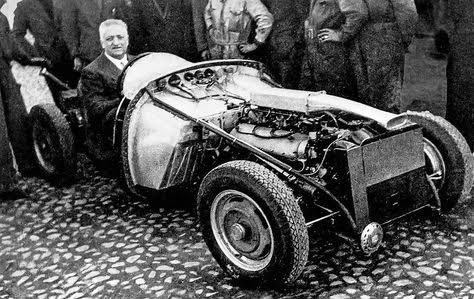
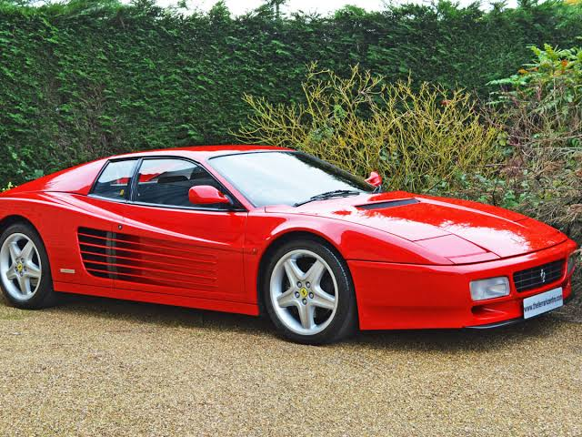
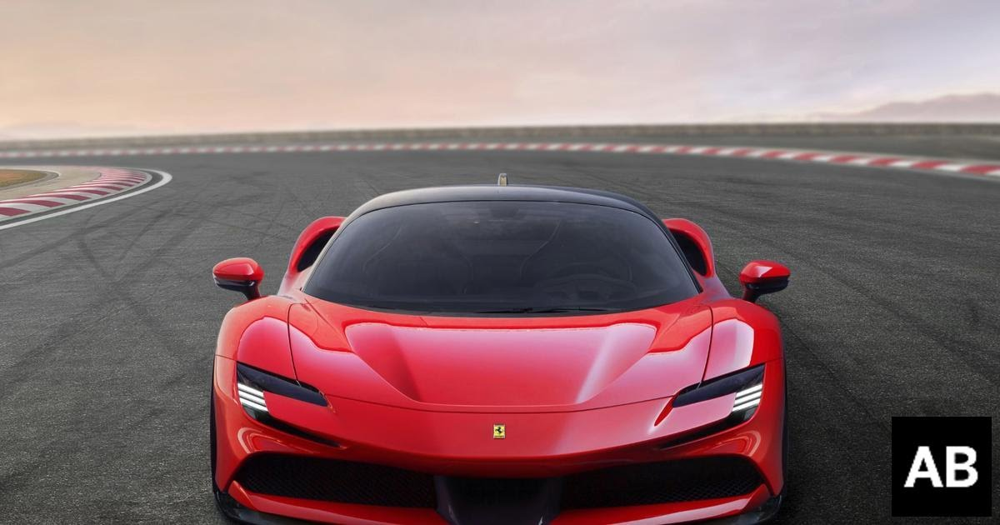

| Company name | Ferrari S.p.A. |
|---|---|
| Founder | Enjo Ferrari |
| Founded on | 1947, Maranello, Italy |
| Headquarters | Maranello, Italy |
| Parent organization | EXOR |
| Chairman | John Elkann |
| CEO | Louis C. Camilleri |
| No.of production plants | 2 |
| Customer service | 18338732288 |
The story of Ferrari officially begins in 1947 when the first car built under the Ferrari marque, the 125 S, drove through the historic factory gates on Via Abetone Inferiore in Maranello. That said, Ferrari’s origins are inextricably linked to its founder’s entire life story.Born in Modena on February 18 1898, Enzo Ferrari passed away on August 14 1988, having devoted his entire life to motor racing. He became an Alfa Romeo works driver in 1924 but just five years later set up the Scuderia Ferrari at Viale Trieste in Modena to allow its mostly gentleman driver members compete.
His new company founded, Enzo Ferrari built a sports car, a spider powered by a 1500 cc 8-cylinder engine. He called it the 815 and two were built. The car also took part in the 1940 Mille Miglia. Unfortunately, the outbreak of World War Two brought all motor racing to an abrupt end.
From a commercial point of view these were years that brought the launch of successful models of the likes of the Enzo Ferrari in 2002 and the F430 in 2004. Even more significantly, however, they saw the adoption of a new branding policy. This resulted in the official inauguration of the first Ferrari Store in Maranello in 2002, followed by a string of openings in Italy and abroad that would ultimately result in 30 single-brand retail outlets worldwide, including Saint Petersburg, Dubai, Abu Dhabi, Singapore, New York and Miami.
